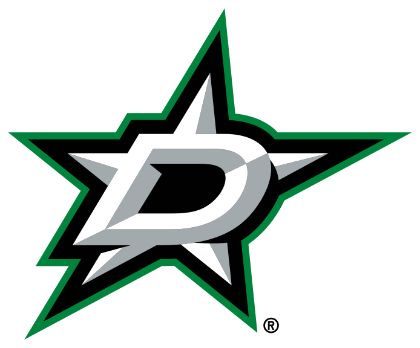

First Period, Quarter & Half Betting Trends
Tue, Nov 17NHL
1P ML
Fade teams off a blowout
42–27 · 61% · league 50% · +5.90u
LIVEWSH @ TBBet 
 TB
TB
TBLIVEANH @ STLBet 
 ANH
ANH
ANHLIVEDAL @ VGKBet

DAL1P O/U
Over 1.5: team off a shutout
17–7 · 71% · league 60% · +5.71u
LIVEWSH @ TBOver 1.5
LIVETOR @ CHIOver 1.5
FINALBUF @ PHIOver 1.5
1P ML
Fade teams off a loss
63–45 · 58% · league 50% · +4.47u
LIVEANH @ STLBet ANH
ANHLIVENSH @ MINBet 
 MIN
MIN
MINLIVEDAL @ VGKBet DAL
NBA
1H Spread
Fade teams off a loss
55–36 · 60% · league 50% · +14.34u
LIVEPOR @ MINBet  MIN
MIN
MINLIVEDET @ SABet  SA
SA
SA10:30 PM ETUTA @ LACBet  LAC
LAC
LAC1Q Spread
Fade big favorites
63–46 · 58% · league 50% · +12.03u
LIVEDET @ SABet  DET
DET
DET11:00 PM ETCHA @ LALBet  CHA
CHA
CHA1Q Spread
Back small underdogs
64–48 · 57% · league 50% · +10.64u
LIVEPOR @ MINBet  POR
POR
POR10:30 PM ETUTA @ LACBet 
 UTA
UTA
UTAFINALNY @ TORBet 
 TOR
TOR
TORNCAAB
1H Spread
Fade teams off a loss
123–95 · 56% · league 50% · +18.40u
LIVEAMCC @ RICEBet 
 RICE
RICE
RICELIVEUTA @ USMBet  UTA
UTA
UTALIVESHSU @ WYOBet  WYO
WYO
WYO1H Spread
Fade teams off a blowout
95–77 · 55% · league 50% · +10.30u
LIVEAMCC @ RICEBet RICE
RICELIVESIUE @ UNDBet  UND
UND
UNDLIVELIN @ UNIBet  UNI
UNI
UNI1H ML
Fade teams off a blowout
167–112 · 60% · league 50% · +9.42u
LIVEAMCC @ RICEBet RICE
RICELIVESIUE @ UNDBet UND
UNDLIVELIN @ UNIBet UNI
UNINFL · Week 11
No NFL trends with games today.
NCAAF · Week 12
1Q Spread
Back big favorites
92–65 · 59% · league 50% · +19.22u
LIVEBALL @ OHIOBet  OHIO
OHIO
OHIOFINALEMU @ WMUBet 
 WMU
WMU
WMUFINALM-OH @ KENTBet 
 M-OH
M-OH
M-OH1H Spread
Back home underdogs
53–38 · 58% · league 50% · +10.47u
FINALM-OH @ KENTBet 
 KENT
KENT
KENT1H Spread
Fade big favorites
99–80 · 55% · league 50% · +10.21u
LIVEBALL @ OHIOBet 
 BALL
BALL
BALLFINALEMU @ WMUBet  EMU
EMU
EMUFINALM-OH @ KENTBet KENT
KENT